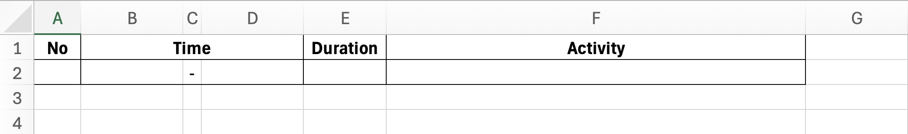
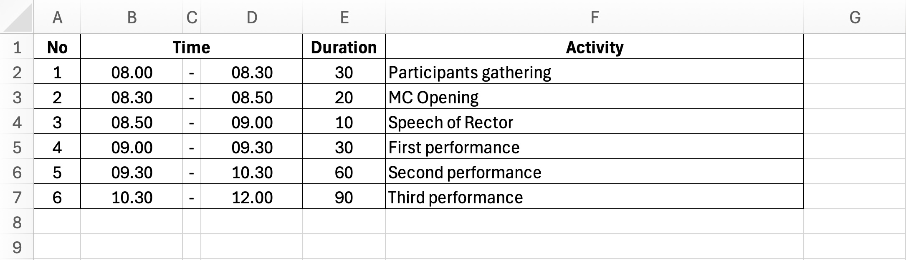

Overview
AI usage enable us to have a fast productivity boost. By using AI, we can renew our Office workflow using the help of AI Companion. Claude is the main AI model/platform will be used in this session.
Claude, especially Claude Desktop has the ability to connect to MCP servers. This allows Claude to access our Excel file without the need to upload it manually. This also allow us to connect to various MCP servers.
Let's make this session a safe place to learn. Don't hesitate to ask questions. If you have completed several steps, please feel free to assist other participants who might need help.
Prerequisites
- Internet connection
- Microsoft Office 2016 or above, or Microsoft Office 365
- Claude Desktop installed
- Claude account
- Bun and uv installed to start MCP server
- Stay calm and enthusiastic!🔥
Bun Installation
Follow instructions below based on your operating system.
macOS
- Open Terminal
- Run the following command:
curl -fsSL https://bun.sh/install | bash - Close and reopen Terminal
- Type
bun --versionto verify that Bun was installed successfully
Windows
- Open Terminal or PowerShell
- Run the following command:
powershell -c "irm bun.sh/install.ps1 | iex" - Close and reopen Terminal or PowerShell
- Type
bun --versionto verify that Bun was installed successfully
uv Installation
Follow instructions below based on your operating system.
macOS
- Open Terminal
- Run the following command:
curl -LsSf https://astral.sh/uv/install.sh | sh - Close and reopen Terminal
- Type
uv --versionto verify that Bun was installed successfully
Windows
- Open Terminal or PowerShell
- Run the following command:
powershell -ExecutionPolicy ByPass -c "irm https://astral.sh/uv/install.ps1 | iex" - Close and reopen Terminal or PowerShell
- Type
uv --versionto verify that Bun was installed successfully
Create a Working Directory
- Go to Finder or File Explorer, then create a folder. This folder will be your main working folder for this session.
- Copy your path to the folder and store in a text editor to be used for the next step.
Connect MCP Servers to Claude Desktop
- Open Claue Desktop
- Click on the profile icon on the bottom left
- Select "Settings"
- Go to "Developer" tab
- Click on "Edit Config" button
- Open the
claude_desktop_config.jsonfile on the text editor (Notepad, TextEdit, or VS Code) - Insert the following code at the beginning of the JSON file:
{ "mcpServers": { "filesystem": { "command": "bunx", "args": [ "-y", "@modelcontextprotocol/server-filesystem", "<your_working_directory_path>" ] }, "markitdown": { "command": "uvx", "args": ["markitdown-mcp"] } }, "... other existing settings ..." } - Save the file and close the text editor
- Restart Claude Desktop for the changes to take effect
- Repeat step 1 to 4, make sure the
filesystemandmarkitdownMCP connection running.

In this section, we will create a dynamic schedule table for an event rundown. By using this table, we only need to know the event's start time and duration for each activity. The table will automatically calculate the end time for each activity.
- Create an Excel file, let's name it
rundown.xlsx, and save it in your working directory. - Create a table with this headers: "No", "Time", "Duration", and "Activity" following the example below.

- At cell B2, enter the starting time of the event, for example
08:00. - At cell D2, enter a formula
=B2+TIME(0;E2;0)whereE2is the duration of the activity in minutes. - Enter the duration of the first activity in minutes at cell E2, for example
30. Cell D2 will automatically show the end time of the activity. - At cell B3, enter a formula
=D2, it will be the starting time for the second activity. - At cell D3, we will use the same formula as on step 4, but on different cell reference, so it will be
=B3+TIME(0;E3;0). - Enter the duration of the second activity in minutes at cell E3, for example
45. - Repeat step 6 to 8 to fill in the rest of the table with adjustment of the reference cell, or you can block range
B3:D3, drag the fill handle to the bottom right of the last cell in the range, then release the mouse button. The formula will automatically adjust the reference cell. - Now you have a dynamic rundown table, you can change the start time or duration of any activity and the table will automatically update.
- Use the "Format Painter" tool to copy the format of the first row to the rest of the rows.
After finishing the steps, you will have this dynamic rundown table.
